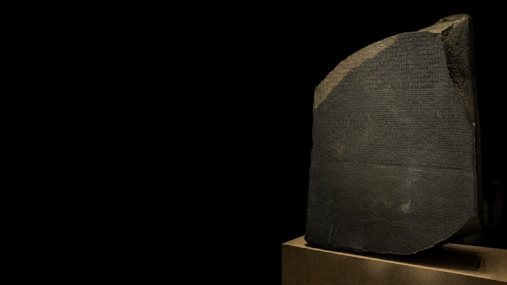
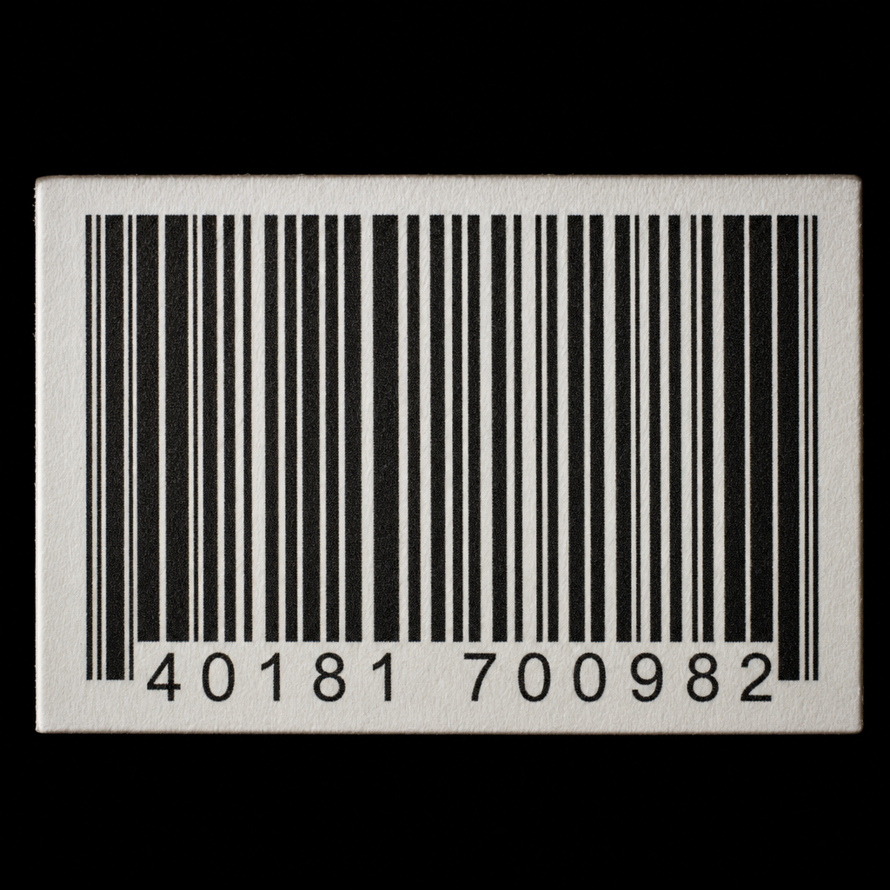
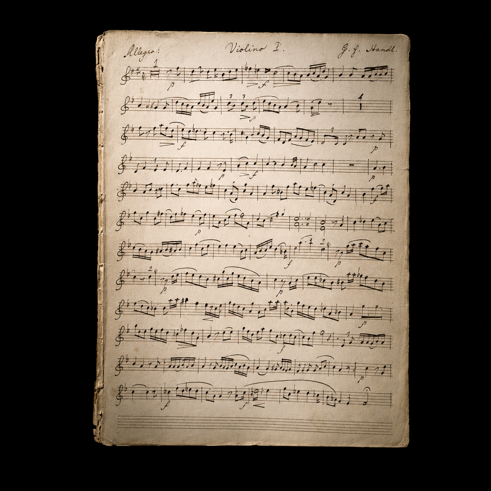
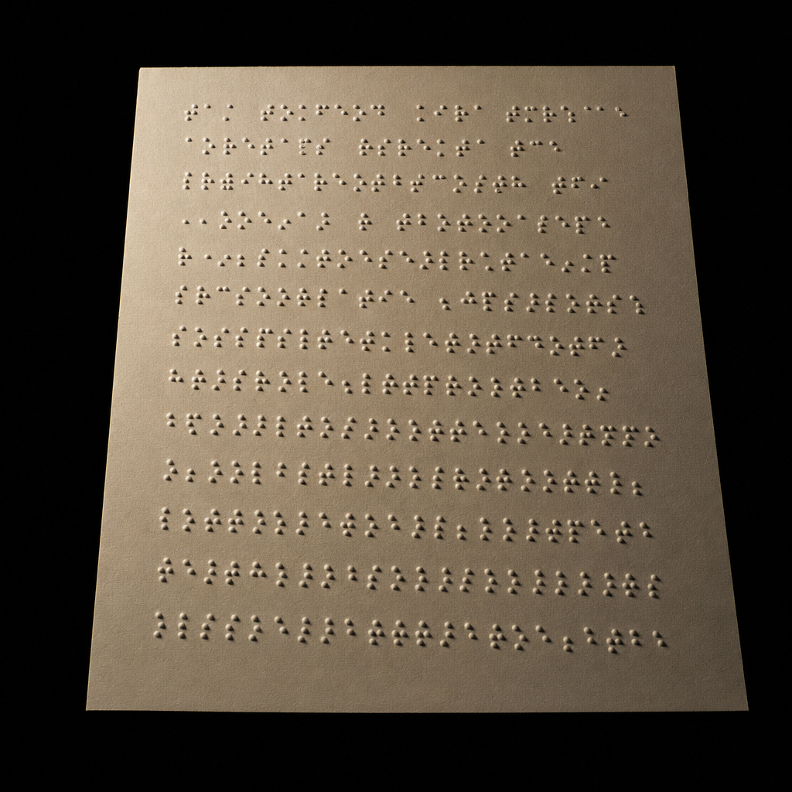
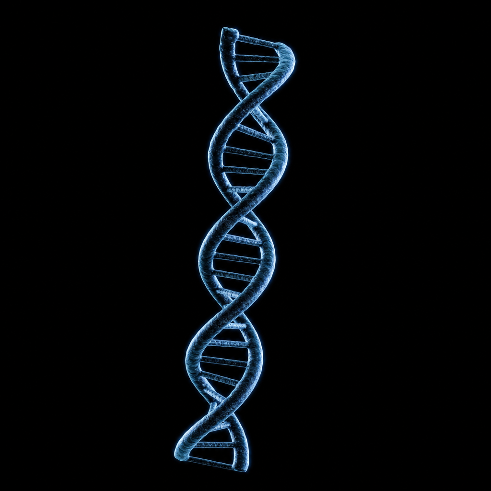
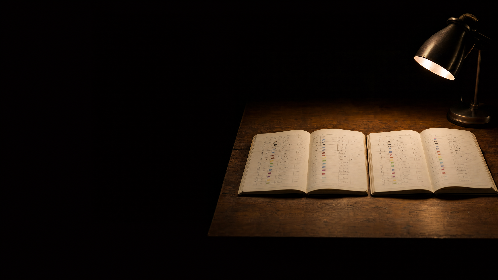

who still knows
what this means?
what a code system is
a letter is a number. the letter comes back only when someone draws it again.
the same letter, three code systems
agreed, not given by nature. that is why there are several.
when the table is too small
one table was too small. so a bigger one was agreed.
two tables, one message
no error message. just clean nonsense.
how many positions per letter?
26 letters, 3 colour positions, 38 codes to spare.
the codebook
the spare codes are stock, not waste.
the same table, both directions
decoding is the same table, read the other way.
what is not in the table
something happens either way. decide which.
a code that does not work
same bits, two readings. the receiver cannot see the boundary.
try it: the prefix trap
three ways out
three answers to one question. all of them work.
what fixed length costs
shorter on average, not in every case.
one byte sequence, three readings
the bytes do not say which reading is right.
one pixel, three numbers
the same three numbers your sender writes: led.set_color(236, 171, 3)
try it: pixel painter
who says which reading?
the type is another agreement.
four agreements, no computer

barcode
bar widths → digits

sheet music
position → pitch and length

braille
six dots → a character

dna
three bases → an amino acid
none of them needs a computer. all of them need an agreement.
the same calculation, three times
braille, dna and your alphabet all landed on 64.

write it down.
twice.